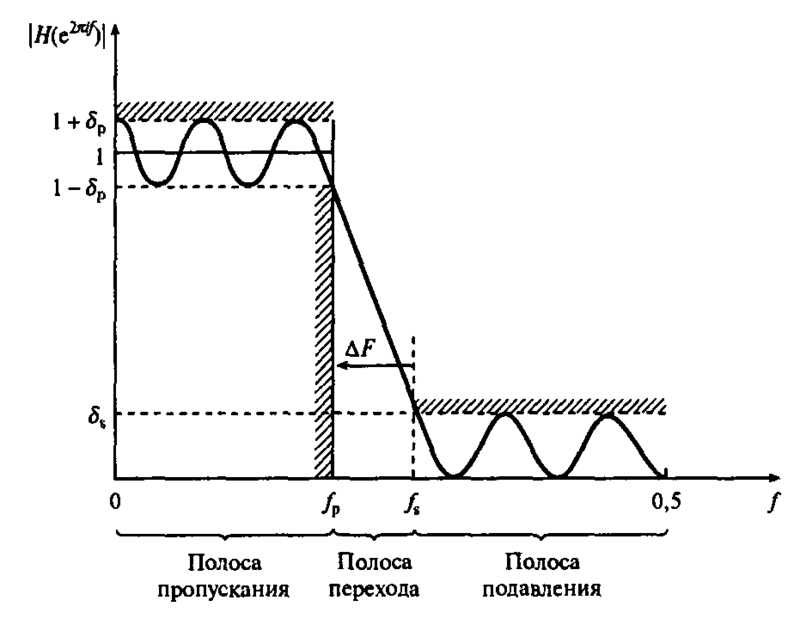
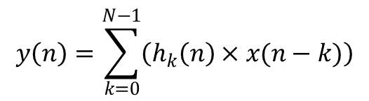
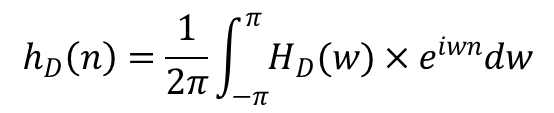
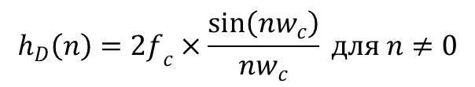
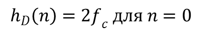
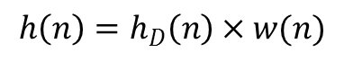

https://habr.com/ru/post/128140/
Построение цифрового фильтра с конечной импульсной характеристикой
Недавно передо мной встала достаточно интересная задача, с которой я раньше никогда не сталкивался — борьба с шумом. Мы принимали сигнал с датчиков на аналогово-цифровой преобразователь (АЦП)
А так как данная тема для меня была (хотя и сейчас есть кое-где) темным лесом, я пошел мучить вопросами гугл, мне показалось освещена эта тема не очень подробно и доступно, поэтому решил написать статью с примером разработки и готовым исходником.
Ближе к делу
Цифровые фильтры могут быть двух видов – с конечной и с бесконечной импульсной характеристикой (КИХ и БИХ). Для решения моей задачи подходит КИХ-фильтр, поэтому про него и расскажу.
Для начала посмотрим как же он работает:

Здесь показан пример фильтра нижних частот, как видно на рисунке, этот фильтр пропускает нижние частоты, а все остальные старается отсечь (подавление), или хотя бы ослабить (переход). Отклонения в полосе пропускания и полосе подавления выбираются в зависимости от принимаемого сигнала, но при использовании различных весовых функций, на них могут накладываться определенные ограничения. Например, если используется весовая функция Хэмминга, то эти отклонения будут равны между собой.
Ширина полосы перехода ∆F зависит от длины фильтра и от весовой функции (для функции Блэкмена ∆F=5,5|N).
Работает фильтр довольно просто: фильтр получает значения, с помощью коэффициентов преобразует их и выдаёт выходную последовательность, тогда с формулой самого фильтра всё понятно:

Она реализуется через цикл, но постойте, а где же взять нужные коэффициенты? Вот тут-то как раз и зарыта собака (и не одна).
Параметры фильтра
Естественно для разных фильтров нужны разные коэффициенты, и для этого нужно определиться с параметрами фильтра, это обычно сначала делается теоретически (с умным видом прикидываем какая у нашего сигнала частота, потом частоты, которые надо отсеивать), а потом изучаем АЧХ реальных измерений (и осознаем, как сильно мы ошибались).
По этим АЧХ мы определяемся с идеальной частотной характеристикой (какие частоты проходят свободно, какие мы убираем и как сильно), теперь нам нужна идеальная импульсная характеристика её можно посчитать как Фурье-образ от идеальной частотной:

где H_D(w) – идеальная характеристика.
Но можно пойти и по более простому пути – есть уже заранее вычисленные идеальные импульсные характеристики, например для фильтра нижних частот формула выглядит следующим образом:


где fc и wc – частота среза.
Итак, осталось уже немного идеал идеалом, а мы имеем дело с практикой, и нам нужна «реальная» импульсная характеристика. Для её расчета нам понадобится весовая функция w(n), их есть несколько разновидностей, в зависимости от требований к фильтру (Хэмминга, Хеннинга, Блэкмена, Кайзера, о них не говорю, ибо статья и так большая), в нашем случае я использую функцию Блэкмена:
где N – длина фильтра, т.е. количество коэффициентов.
Теперь надо перемножить идеальную импульсную характеристику и весовую функцию:

Финишная прямая
Теперь мы готовы рассчитать выходные значения, по формуле фильтра, она самая первая в этой статье, ну вот и всё, в завершение привожу исходный код фильтра:
void Filter (const double in[], double out[], int sizeIn)
{
const int N = 20; //Длина фильтра
long double Fd = 2000; //Частота дискретизации входных данных
long double Fs = 20; //Частота полосы пропускания
long double Fx = 50; //Частота полосы затухания
long double H [N] = {0}; //Импульсная характеристика фильтра
long double H_id [N] = {0}; //Идеальная импульсная характеристика
long double W [N] = {0}; //Весовая функция
//Расчет импульсной характеристики фильтра
double Fc = (Fs + Fx) / (2 * Fd);
for (int i=0;i<N;i++)
{
if (i==0) H_id[i] = 2*M_PI*Fc;
else H_id[i] = sinl(2*M_PI*Fc*i )/(M_PI*i);
// весовая функция Блекмена
W [i] = 0.42 - 0.5 * cosl((2*M_PI*i) /( N-1)) + 0.08 * cosl((4*M_PI*i) /( N-1));
H [i] = H_id[i] * W[i];
}
//Нормировка импульсной характеристики
double SUM=0;
for (int i=0; i<N; i++) SUM +=H[i];
for (int i=0; i<N; i++) H[i]/=SUM; //сумма коэффициентов равна 1
//Фильтрация входных данных
for (int i=0; i<sizeIn; i++)
{
out[i]=0.;
for (int j=0; j<N-1; j++)// та самая формула фильтра
if(i-j>=0)
out[i]+= H[j]*in[i-j];
}
}
При подготовке статьи использовались:
Основные характеристики и параметры фильтров. analogiu.ru/6/6-5-2.html
Айфичер Э. Джервис Б. Цифровая обработка сигналов. Практический подход. 2-е издание
Теги:
Хабы:
�